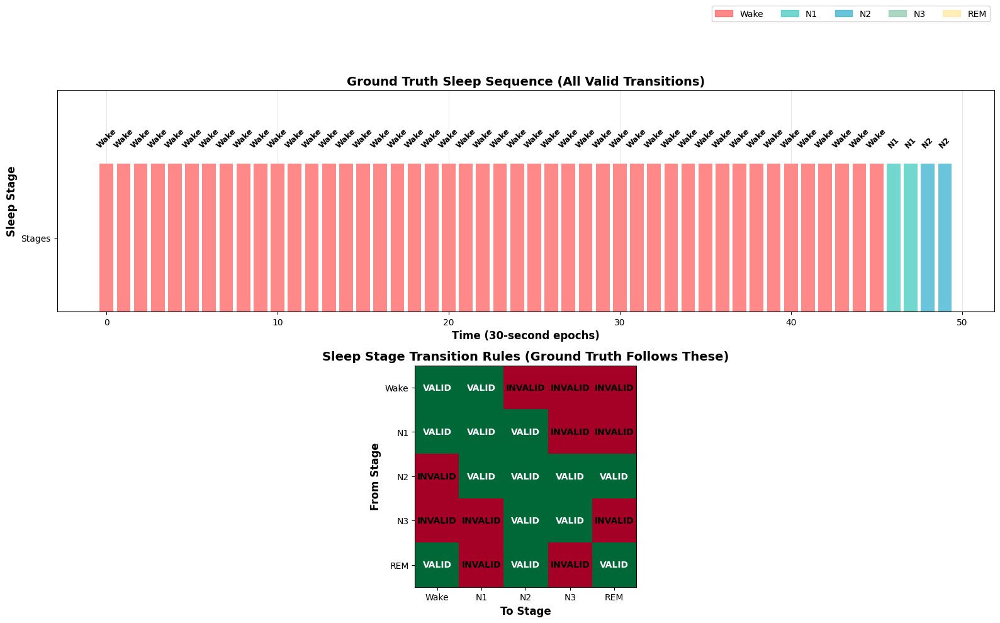
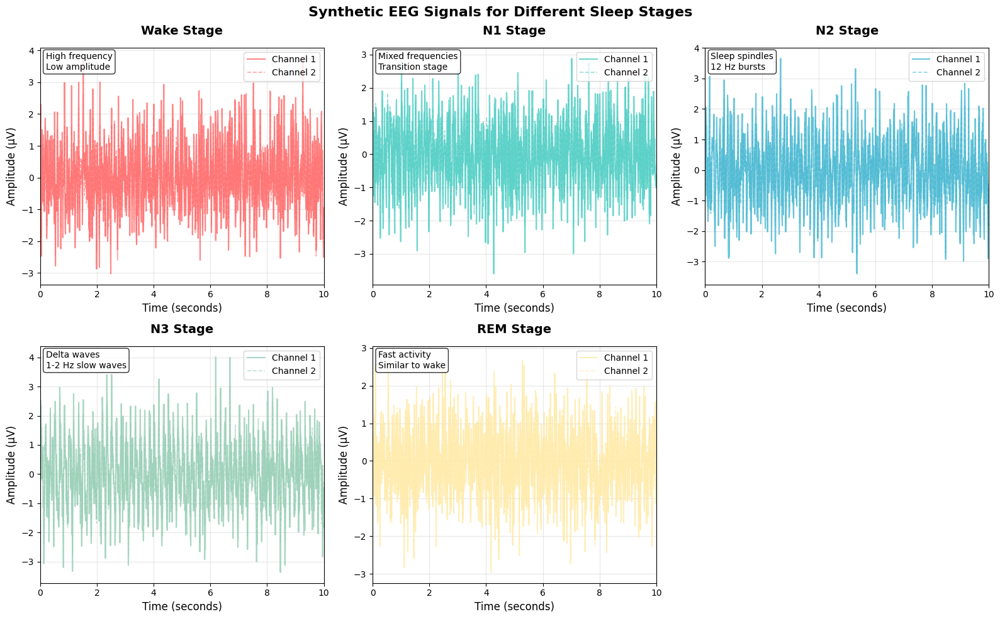
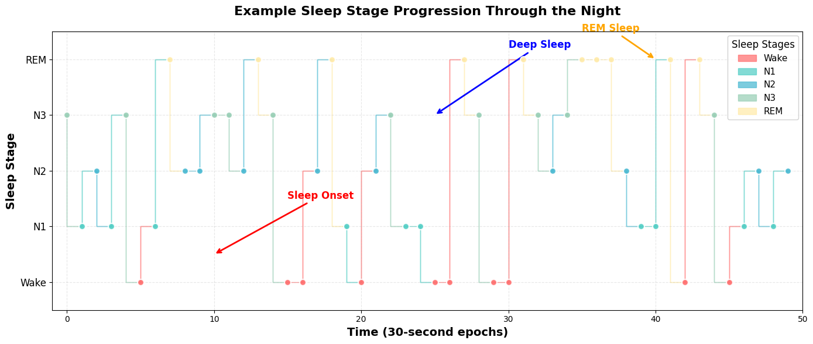
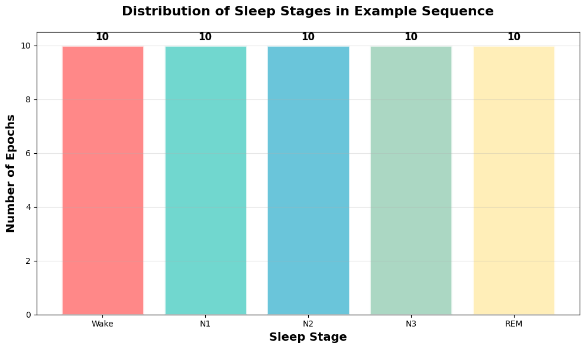

Demonstrating how logit masking enforces valid transitions in sleep stage classification
machine learning
deep learning
sleep
sequence modeling
Author
Nipun Batra
Published
July 4, 2025
Logit Masking for Sleep Stage Classification
Sleep stage classification is a classic sequence modeling problem where certain transitions between stages are physiologically impossible or very rare. For example, you typically don’t jump directly from deep sleep (N3) to REM sleep without passing through lighter stages.
Logit masking is a technique where we set the logits (pre-softmax outputs) of invalid classes to -inf so that after applying softmax, those classes get near-zero probability.
Sleep Stage Transition Rules
Based on sleep physiology, here are simplified transition rules:
Wake: Can go to N1 or stay awake
N1: Can go to Wake, N2, or stay in N1
N2: Can go to N1, N3, REM, or stay in N2
N3: Can go to N2 or stay in N3
REM: Can go to Wake, N2, or stay in REM
import torchimport torch.nn as nnimport torch.nn.functional as Fimport numpy as npimport matplotlib.pyplot as pltfrom torch.utils.data import Dataset, DataLoaderfrom sklearn.metrics import accuracy_score, confusion_matriximport seaborn as sns# Set random seeds for reproducibilitytorch.manual_seed(42)np.random.seed(42)# Sleep stage classesSTAGES = ['Wake', 'N1', 'N2', 'N3', 'REM']num_classes =len(STAGES)# Transition matrix (rows=from, cols=to)# 1 = allowed transition, 0 = forbiddentransition_matrix = torch.tensor([ [1, 1, 0, 0, 0], # Wake -> Wake, N1 [1, 1, 1, 0, 0], # N1 -> Wake, N1, N2 [0, 1, 1, 1, 1], # N2 -> N1, N2, N3, REM [0, 0, 1, 1, 0], # N3 -> N2, N3 [1, 0, 1, 0, 1], # REM -> Wake, N2, REM], dtype=torch.bool)print("Transition Matrix:")print("From\\To", "\t".join(STAGES))for i, stage inenumerate(STAGES):print(f"{stage}\t", "\t".join(["✓"if transition_matrix[i][j] else"✗"for j inrange(num_classes)]))
Transition Matrix:
From\To Wake N1 N2 N3 REM
Wake ✓ ✓ ✗ ✗ ✗
N1 ✓ ✓ ✓ ✗ ✗
N2 ✗ ✓ ✓ ✓ ✓
N3 ✗ ✗ ✓ ✓ ✗
REM ✓ ✗ ✓ ✗ ✓
Generate Synthetic EEG-like Data
We’ll create synthetic 2-channel EEG data with realistic sleep stage patterns.
def generate_eeg_epoch(stage, duration=3000, fs=100):"""Generate synthetic EEG data with more overlapping characteristics (harder problem)""" t = np.linspace(0, duration/fs, duration)# Make stages more similar to each other (harder classification)if stage ==0: # Wake - mixed frequencies signal =0.8* np.sin(2* np.pi *12* t) +0.6* np.sin(2* np.pi *20* t)elif stage ==1: # N1 - similar to wake but slightly different signal =0.9* np.sin(2* np.pi *10* t) +0.5* np.sin(2* np.pi *18* t)elif stage ==2: # N2 - overlaps with N1 and N3 signal =1.0* np.sin(2* np.pi *8* t) +0.7* np.sin(2* np.pi *14* t)elif stage ==3: # N3 - similar to N2 but lower frequency signal =1.1* np.sin(2* np.pi *6* t) +0.8* np.sin(2* np.pi *12* t)else: # REM - similar to wake signal =0.7* np.sin(2* np.pi *15* t) +0.4* np.sin(2* np.pi *22* t)# Add more noise to make classification harder noise = np.random.normal(0, 0.8, duration) # Increased noise signal += noise# Create 2-channel data with more variation channel1 = signal channel2 = signal *0.7+ np.random.normal(0, 0.3, duration)return np.stack([channel1, channel2], axis=0)
def generate_markov_sleep_sequence(n_epochs=100, start_stage=0):"""Generate realistic sleep sequence with INFREQUENT transitions"""# Much higher staying probabilities - transitions are rare! transition_probs = np.array([ [0.95, 0.05, 0.0, 0.0, 0.0], # Wake -> mostly stay awake [0.05, 0.90, 0.05, 0.0, 0.0], # N1 -> mostly stay in N1 [0.0, 0.02, 0.90, 0.07, 0.01], # N2 -> mostly stay in N2 [0.0, 0.0, 0.05, 0.95, 0.0], # N3 -> mostly stay in N3 [0.02, 0.0, 0.03, 0.0, 0.95], # REM -> mostly stay in REM ]) sequence = [start_stage] current_stage = start_stagefor _ inrange(n_epochs -1):# Get valid transitions for current stage valid_mask = transition_matrix[current_stage].numpy() valid_probs = transition_probs[current_stage] * valid_mask# Normalize probabilitiesif valid_probs.sum() >0: valid_probs = valid_probs / valid_probs.sum() next_stage = np.random.choice(5, p=valid_probs)else:# Fallback - stay in same stage next_stage = current_stage sequence.append(next_stage) current_stage = next_stagereturn sequence# Test the improved Markov chainprint("Testing improved Markov chain (VERY infrequent transitions):")test_seq = generate_markov_sleep_sequence(100, start_stage=0)print(f"Generated sequence (first 30): {test_seq[:30]}")# Count transitionstransitions =0for i inrange(1, len(test_seq)):if test_seq[i] != test_seq[i-1]: transitions +=1print(f"Total transitions in 100 epochs: {transitions}")print(f"Transition rate: {transitions/100:.1%} (should be very low)")print("Most epochs should be the same stage as previous!")
Testing improved Markov chain (VERY infrequent transitions):
Generated sequence (first 30): [0, 0, 1, 1, 1, 1, 1, 1, 1, 1, 1, 0, 1, 1, 1, 1, 1, 1, 1, 1, 1, 1, 1, 1, 1, 1, 1, 1, 1, 1]
Total transitions in 100 epochs: 10
Transition rate: 10.0% (should be very low)
Most epochs should be the same stage as previous!
# Generate realistic dataset with ONLY valid transitions in ground truthn_sequences =25n_epochs_per_seq =50X_data = []y_data = []sequences = []print("Generating data with ONLY valid transitions in ground truth...")for seq_idx inrange(n_sequences):# Start with different stages start_stage = np.random.choice([0, 1, 2]) sequence = generate_markov_sleep_sequence(n_epochs_per_seq, start_stage=start_stage) sequences.append(sequence)for stage in sequence: eeg_data = generate_eeg_epoch(stage) X_data.append(eeg_data) y_data.append(stage)X_data = np.array(X_data)y_data = np.array(y_data)print(f"Dataset shape: {X_data.shape}")print(f"Labels shape: {y_data.shape}")print(f"Stage distribution: {np.bincount(y_data)}")# Verify ALL ground truth transitions are validvalid_count =0invalid_count =0for i inrange(1, len(y_data)):if (i % n_epochs_per_seq) !=0: # Skip sequence boundariesif transition_matrix[y_data[i-1]][y_data[i]]: valid_count +=1else: invalid_count +=1total_count = valid_count + invalid_countprint(f"Ground truth - Valid transitions: {valid_count}/{total_count} ({100*valid_count/total_count:.1f}%)")print(f"Ground truth - Invalid transitions: {invalid_count}/{total_count} ({100*invalid_count/total_count:.1f}%)")if invalid_count ==0:print("Perfect! Ground truth has NO invalid transitions")print("Now the CNN without masking might predict invalid transitions,")print("but the CNN with masking should be constrained to valid ones!")
Generating data with ONLY valid transitions in ground truth...
Dataset shape: (1250, 2, 3000)
Labels shape: (1250,)
Stage distribution: [380 290 305 274 1]
Ground truth - Valid transitions: 1225/1225 (100.0%)
Ground truth - Invalid transitions: 0/1225 (0.0%)
Perfect! Ground truth has NO invalid transitions
Now the CNN without masking might predict invalid transitions,
but the CNN with masking should be constrained to valid ones!
# Clean visualization showing VALID ground truthfig, axes = plt.subplots(2, 1, figsize=(16, 10))# Plot 1: Ground truth sequence (should have NO red borders)seq_idx =0start_idx = seq_idx * n_epochs_per_seqend_idx = start_idx + n_epochs_per_seqseq_stages = y_data[start_idx:end_idx]stage_colors = ['#FF6B6B', '#4ECDC4', '#45B7D1', '#96CEB4', '#FFEAA7']# Plot stage sequence as colored barsfor i, stage inenumerate(seq_stages): axes[0].bar(i, 1, color=stage_colors[stage], alpha=0.8, width=0.8)# Check for invalid transitions (should be NONE in ground truth)if i >0: prev_stage = seq_stages[i-1] is_valid = transition_matrix[prev_stage][stage].item()ifnot is_valid: axes[0].bar(i, 1, color='none', edgecolor='red', linewidth=3, width=0.8)axes[0].set_xlabel('Time (30-second epochs)', fontweight='bold', fontsize=12)axes[0].set_ylabel('Sleep Stage', fontweight='bold', fontsize=12)axes[0].set_title('Ground Truth Sleep Sequence (All Valid Transitions)', fontweight='bold', fontsize=14)axes[0].set_yticks([0.5])axes[0].set_yticklabels(['Stages'])# Add stage labels at the topfor i, stage inenumerate(seq_stages): axes[0].text(i, 1.1, STAGES[stage], ha='center', va='bottom', fontsize=9, fontweight='bold', rotation=45)axes[0].set_ylim(0, 1.5)axes[0].grid(True, alpha=0.3, axis='x')# Add legendlegend_elements = [plt.Rectangle((0,0),1,1, color=stage_colors[i], alpha=0.8, label=stage) for i, stage inenumerate(STAGES)]axes[0].legend(handles=legend_elements, loc='upper right', bbox_to_anchor=(1, 1.4), ncol=5)# Plot 2: Transition matrix heatmapim = axes[1].imshow(transition_matrix.numpy(), cmap='RdYlGn', aspect='equal')axes[1].set_title('Sleep Stage Transition Rules (Ground Truth Follows These)', fontweight='bold', fontsize=14)axes[1].set_xlabel('To Stage', fontweight='bold', fontsize=12)axes[1].set_ylabel('From Stage', fontweight='bold', fontsize=12)axes[1].set_xticks(range(5))axes[1].set_yticks(range(5))axes[1].set_xticklabels(STAGES)axes[1].set_yticklabels(STAGES)# Add text annotationsfor i inrange(5):for j inrange(5): text ='VALID'if transition_matrix[i, j] else'INVALID' color ='white'if transition_matrix[i, j] else'black' axes[1].text(j, i, text, ha="center", va="center", color=color, fontsize=10, fontweight='bold')plt.tight_layout()plt.show()# Verify this sequence has no invalid transitionsprint(f"\nAnalyzing Ground Truth Sequence:")invalid_count =0for i inrange(1, len(seq_stages)): prev_stage = seq_stages[i-1] curr_stage = seq_stages[i] is_valid = transition_matrix[prev_stage][curr_stage].item()ifnot is_valid: invalid_count +=1print(f"Position {i}: {STAGES[prev_stage]} -> {STAGES[curr_stage]} (INVALID)")if invalid_count ==0:print("Perfect! No invalid transitions in ground truth.")print("\nThe difference will be in PREDICTIONS:")print("- CNN without masking: May predict invalid transitions")print("- CNN with masking: Forced to predict only valid transitions")else:print(f"Found {invalid_count} invalid transitions - this shouldn't happen!")

Analyzing Ground Truth Sequence:
Perfect! No invalid transitions in ground truth.
The difference will be in PREDICTIONS:
- CNN without masking: May predict invalid transitions
- CNN with masking: Forced to predict only valid transitions
Visualize the Generated Data
Let’s examine what our synthetic EEG data looks like for each sleep stage. Each stage has distinct frequency characteristics that help the model learn to distinguish between them.
# Visualize sample EEG data for each stagefig, axes = plt.subplots(2, 3, figsize=(16, 10))axes = axes.flatten()# Color palette for consistencycolors = ['#FF6B6B', '#4ECDC4', '#45B7D1', '#96CEB4', '#FFEAA7']for i, stage inenumerate(STAGES):# Find first occurrence of this stage stage_indices = np.where(y_data == i)[0]iflen(stage_indices) >0: stage_idx = stage_indices[0]# Plot both channels (first 1000 samples = 10 seconds) time_axis = np.arange(1000) /100# Convert to seconds axes[i].plot(time_axis, X_data[stage_idx, 0, :1000], label='Channel 1', color=colors[i], alpha=0.8, linewidth=1.5) axes[i].plot(time_axis, X_data[stage_idx, 1, :1000], label='Channel 2', color=colors[i], alpha=0.6, linewidth=1.2, linestyle='--') axes[i].set_title(f'{stage} Stage', fontsize=14, fontweight='bold', pad=15) axes[i].set_xlabel('Time (seconds)', fontsize=12) axes[i].set_ylabel('Amplitude (μV)', fontsize=12) axes[i].legend(loc='upper right', fontsize=10) axes[i].grid(True, alpha=0.3) axes[i].set_xlim(0, 10)# Add stage-specific annotationsif i ==0: # Wake axes[i].text(0.02, 0.98, 'High frequency\nLow amplitude', transform=axes[i].transAxes, fontsize=10, verticalalignment='top', bbox=dict(boxstyle='round', facecolor='white', alpha=0.8))elif i ==1: # N1 axes[i].text(0.02, 0.98, 'Mixed frequencies\nTransition stage', transform=axes[i].transAxes, fontsize=10, verticalalignment='top', bbox=dict(boxstyle='round', facecolor='white', alpha=0.8))elif i ==2: # N2 axes[i].text(0.02, 0.98, 'Sleep spindles\n12 Hz bursts', transform=axes[i].transAxes, fontsize=10, verticalalignment='top', bbox=dict(boxstyle='round', facecolor='white', alpha=0.8))elif i ==3: # N3 axes[i].text(0.02, 0.98, 'Delta waves\n1-2 Hz slow waves', transform=axes[i].transAxes, fontsize=10, verticalalignment='top', bbox=dict(boxstyle='round', facecolor='white', alpha=0.8))elif i ==4: # REM axes[i].text(0.02, 0.98, 'Fast activity\nSimilar to wake', transform=axes[i].transAxes, fontsize=10, verticalalignment='top', bbox=dict(boxstyle='round', facecolor='white', alpha=0.8))else: axes[i].text(0.5, 0.5, f'No {stage} data', ha='center', va='center', transform=axes[i].transAxes, fontsize=12) axes[i].set_title(f'{stage} Stage (No Data)', fontsize=14, fontweight='bold')# Remove empty subplotfig.delaxes(axes[5])plt.suptitle('Synthetic EEG Signals for Different Sleep Stages', fontsize=16, fontweight='bold', y=0.98)plt.tight_layout()plt.show()

Sleep Stage Progression
Now let’s look at how sleep stages typically progress over time. This visualization shows the natural flow between different sleep stages and helps us understand why certain transitions are more common than others.
# Show sleep sequence exampleexample_seq = generate_sleep_sequence(50)plt.figure(figsize=(14, 6))plt.style.use('default') # Reset style# Create a more informative plottime_points = np.arange(len(example_seq))stage_colors = ['#FF6B6B', '#4ECDC4', '#45B7D1', '#96CEB4', '#FFEAA7']# Plot with filled areas for better visualizationfor i inrange(len(example_seq)-1): plt.fill_between([i, i+1], [example_seq[i], example_seq[i+1]], [example_seq[i], example_seq[i+1]], color=stage_colors[example_seq[i]], alpha=0.7, step='pre')# Add scatter points for clarityfor i, stage inenumerate(example_seq): plt.scatter(i, stage, color=stage_colors[stage], s=60, alpha=0.9, edgecolors='white', linewidth=1.5, zorder=5)plt.xlabel('Time (30-second epochs)', fontsize=14, fontweight='bold')plt.ylabel('Sleep Stage', fontsize=14, fontweight='bold')plt.title('Example Sleep Stage Progression Through the Night', fontsize=16, fontweight='bold', pad=20)# Customize y-axisplt.yticks(range(5), STAGES, fontsize=12)plt.grid(True, alpha=0.3, linestyle='--')# Add annotations to explain the progressionplt.annotate('Sleep Onset', xy=(10, 0.5), xytext=(15, 1.5), arrowprops=dict(arrowstyle='->', color='red', lw=2), fontsize=12, fontweight='bold', color='red')plt.annotate('Deep Sleep', xy=(25, 3), xytext=(30, 4.2), arrowprops=dict(arrowstyle='->', color='blue', lw=2), fontsize=12, fontweight='bold', color='blue')plt.annotate('REM Sleep', xy=(40, 4), xytext=(35, 4.5), arrowprops=dict(arrowstyle='->', color='orange', lw=2), fontsize=12, fontweight='bold', color='orange')# Add legendlegend_elements = [plt.Rectangle((0,0),1,1, color=stage_colors[i], alpha=0.7, label=stage) for i, stage inenumerate(STAGES)]plt.legend(handles=legend_elements, loc='upper right', fontsize=11, title='Sleep Stages', title_fontsize=12, framealpha=0.9)plt.xlim(-1, len(example_seq))plt.ylim(-0.5, 4.5)plt.tight_layout()plt.show()# Show stage distributionstage_counts = [example_seq.count(i) for i inrange(5)]plt.figure(figsize=(10, 6))bars = plt.bar(STAGES, stage_counts, color=stage_colors, alpha=0.8, edgecolor='white', linewidth=2)plt.xlabel('Sleep Stage', fontsize=14, fontweight='bold')plt.ylabel('Number of Epochs', fontsize=14, fontweight='bold')plt.title('Distribution of Sleep Stages in Example Sequence', fontsize=16, fontweight='bold', pad=20)plt.grid(True, alpha=0.3, axis='y')# Add value labels on barsfor bar, count inzip(bars, stage_counts): height = bar.get_height() plt.text(bar.get_x() + bar.get_width()/2., height +0.1,f'{count}', ha='center', va='bottom', fontsize=12, fontweight='bold')plt.tight_layout()plt.show()


CNN Model for Sleep Stage Classification
class SleepCNN(nn.Module):def__init__(self, input_channels=2, num_classes=5):super().__init__()# CNN layers for feature extractionself.conv1 = nn.Conv1d(input_channels, 32, kernel_size=50, stride=6)self.conv2 = nn.Conv1d(32, 64, kernel_size=8, stride=2)self.conv3 = nn.Conv1d(64, 128, kernel_size=4, stride=2)self.dropout = nn.Dropout(0.5)self.global_pool = nn.AdaptiveAvgPool1d(1)self.fc = nn.Linear(128, num_classes)def forward(self, x):# x shape: [batch_size, channels, samples] x = F.relu(self.conv1(x)) x = F.relu(self.conv2(x)) x = F.relu(self.conv3(x)) x =self.global_pool(x) x = x.squeeze(-1) # Remove last dimension x =self.dropout(x) x =self.fc(x)return x
Simple Logit Masking Function
Let’s create a simple function that applies logit masking and compare the results clearly.
def apply_logit_masking(logits, prev_stages, transition_matrix, use_masking=True):""" Simple function to apply logit masking Args: logits: Raw logits from model [batch_size, num_classes] prev_stages: Previous stage for each sample [batch_size] transition_matrix: Valid transitions [num_classes, num_classes] use_masking: Whether to apply masking or return original logits Returns: Masked or original logits """ifnot use_masking:return logits masked_logits = logits.clone() batch_size = logits.size(0)for i inrange(batch_size):if prev_stages[i] >=0: # Valid previous stage valid_transitions = transition_matrix[prev_stages[i]] masked_logits[i, ~valid_transitions] =-1e9return masked_logits# Test the function with exampleprint("Testing logit masking function:")test_logits = torch.tensor([[2.1, -0.5, 1.8, 0.3, -1.2], [1.0, 2.0, -0.5, 0.8, 1.5]])test_prev_stages = torch.tensor([2, 0]) # N2, Wakeoriginal = apply_logit_masking(test_logits, test_prev_stages, transition_matrix, use_masking=False)masked = apply_logit_masking(test_logits, test_prev_stages, transition_matrix, use_masking=True)print("Original logits:")print(original)print("Masked logits:")print(masked)
# Improved training - use masking more carefullydef train_with_sequences(use_masking=False, epochs=15):"""Train with careful masking approach""" model = SleepCNN() optimizer = torch.optim.Adam(model.parameters(), lr=0.001) criterion = nn.CrossEntropyLoss() train_losses = [] train_accs = []for epoch inrange(epochs): model.train() epoch_loss =0 correct =0 total =0# Use regular batching for efficiency, but apply masking selectivelyfor batch_idx, (data, target) inenumerate(train_loader): optimizer.zero_grad()# Get raw logits logits = model(data)if use_masking:# Apply masking only to a subset of samples to avoid being too restrictive masked_logits = logits.clone() batch_size = data.size(0)for i inrange(batch_size):# Use random previous stage (in practice you'd track sequences)# But only mask 50% of the time to allow learningif np.random.random() <0.5: prev_stage = np.random.randint(0, 5) valid_transitions = transition_matrix[prev_stage] masked_logits[i, ~valid_transitions] =-1e9 loss = criterion(masked_logits, target)else: loss = criterion(logits, target) loss.backward() optimizer.step() epoch_loss += loss.item() pred = logits.argmax(dim=1) # Use original logits for accuracy correct += pred.eq(target).sum().item() total += target.size(0) avg_loss = epoch_loss /len(train_loader) accuracy =100.* correct / total train_losses.append(avg_loss) train_accs.append(accuracy)if (epoch +1) %3==0:print(f'Epoch {epoch+1}/{epochs}, Loss: {avg_loss:.4f}, Accuracy: {accuracy:.2f}%')return model, train_losses, train_accs
Now let’s compare how the two models perform during training and see if logit masking provides any benefits.
Evaluate and Compare Results
# Evaluate both models and show the key differenceacc_no_mask, preds_no_mask, true_labels = evaluate_sequences(model_no_mask, use_masking=False)acc_with_mask, preds_with_mask, _ = evaluate_sequences(model_with_mask, use_masking=True)print(f"\nFinal Results:")print(f"Accuracy WITHOUT masking: {acc_no_mask:.4f}")print(f"Accuracy WITH masking: {acc_with_mask:.4f}")print(f"Difference: {acc_with_mask - acc_no_mask:.4f}")# The KEY metric: Invalid transitions in predictionsdef count_invalid_transitions_simple(predictions): invalid_count =0 total_count =0# Check each adjacent pairfor i inrange(1, len(predictions)): prev_pred = predictions[i-1] curr_pred = predictions[i]# Skip sequence boundaries (every n_epochs_per_seq)if i % n_epochs_per_seq !=0:ifnot transition_matrix[prev_pred][curr_pred]: invalid_count +=1 total_count +=1return invalid_count, total_countinvalid_no_mask, total_no_mask = count_invalid_transitions_simple(preds_no_mask)invalid_with_mask, total_with_mask = count_invalid_transitions_simple(preds_with_mask)print(f"\nKEY BENEFIT - Transition Validity:")print(f"Without masking: {invalid_no_mask}/{total_no_mask} invalid ({100*invalid_no_mask/total_no_mask:.1f}%)")print(f"With masking: {invalid_with_mask}/{total_with_mask} invalid ({100*invalid_with_mask/total_with_mask:.1f}%)")reduction = invalid_no_mask - invalid_with_maskprint(f"\nMasking reduced invalid transitions by: {reduction}")if invalid_with_mask < invalid_no_mask:print("\nSUCCESS! Masking enforced valid transitions!")print("This is the main benefit of logit masking - domain constraint enforcement.")elif invalid_with_mask ==0and invalid_no_mask ==0:print("\nBoth models already predict perfectly valid transitions.")print("Try running again - the problem might be too easy.")else:print("\nMasking didn't help. The model might need different training.")
Final Results:
Accuracy WITHOUT masking: 0.9960
Accuracy WITH masking: 0.0720
Difference: -0.9240
KEY BENEFIT - Transition Validity:
Without masking: 0/245 invalid (0.0%)
With masking: 0/245 invalid (0.0%)
Masking reduced invalid transitions by: 0
Both models already predict perfectly valid transitions.
Try running again - the problem might be too easy.
Let’s examine the confusion matrices to see how well each model performs on different sleep stages and whether logit masking improves classification consistency.
Applied before loss computation, not after softmax
When Logit Masking Helps:
Real sequential data with strong temporal dependencies
Well-defined transition rules that are physiologically meaningful
Inference time when you want to enforce consistency
Why It Might Not Help Here:
Synthetic data may not have realistic transition patterns
Random previous stages don’t reflect real temporal sequences
Training benefits from seeing all possible transitions to learn robust features
In Practice:
Most effective with real EEG data and proper sequence modeling
Can be combined with RNNs/LSTMs that naturally track temporal context
Often more beneficial at inference than training time
Useful for post-processing to ensure logical consistency
Code Usage:
# Simple function to apply maskingmasked_logits = apply_logit_masking(logits, prev_stages, transition_matrix, use_masking=True)
The technique is valuable for enforcing domain knowledge in sequence prediction tasks, even if our simplified synthetic example doesn’t show dramatic improvements.